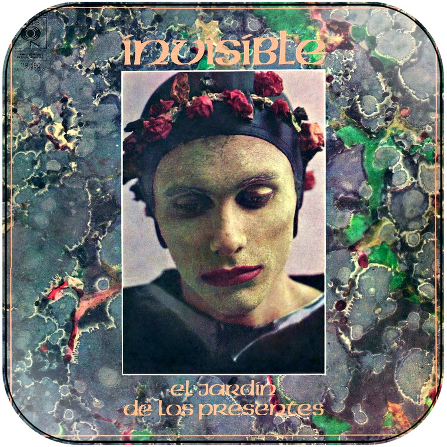

1973: INVISIBLE: JAZZ FUSIÓN Y ROCK SINFÓNICO
Formada por Luis Alberto Spinetta en guitarra, Machi Rufino en bajo, y Pomo Lorenzo en batería, este power trío con los músicos de Pappos Blues le agregó vuelo al rock, con sus acordes extravagantes, y las letras de pensamiento lírico.
A través de "Invisible", "Durazno sangrando", y "El jardín de los presentes", pudimos oír la etapa mas sinfónica de su carrera, equivalente a Genesis, Pink Floyd, y otros recursos musicales locales, tales como Seru Girán.
En el siguiente link está su canal oficial de Youtube donde podemos escuchar toda su discografía
